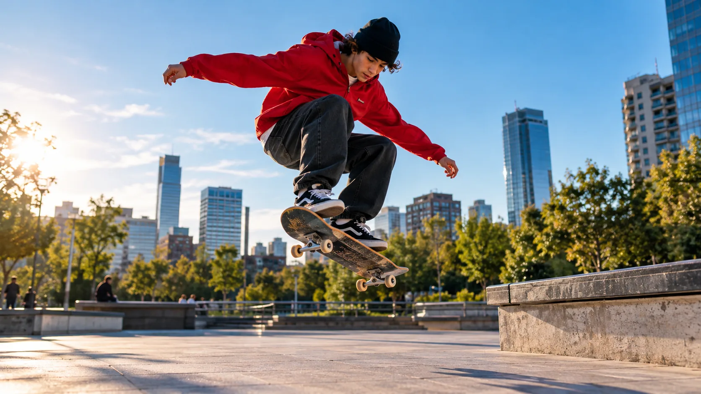

UNA HERRAMIENTA · TRES VERSIONES
Tu video, listo
para cada pantalla.
Crea versiones vertical, cuadrada y horizontal. El video se mantiene completo; el fondo difuminado rellena el espacio sobrante.
Crear mis versiones ↘✓ Video completo✓ Descarga MP4✓ Sin cortar el original
DE UN VIDEO A TRES VERSIONES
ORIGINAL

Video original9:16
1:1
16:9
✓El contenido principal se conservaUn mismo video, tres versiones para publicar
Crea tus versiones
Accede a tu herramienta
Introduce la clave de acceso que recibiste al comprar.
¿Aún no tienes acceso? Visita la tienda.